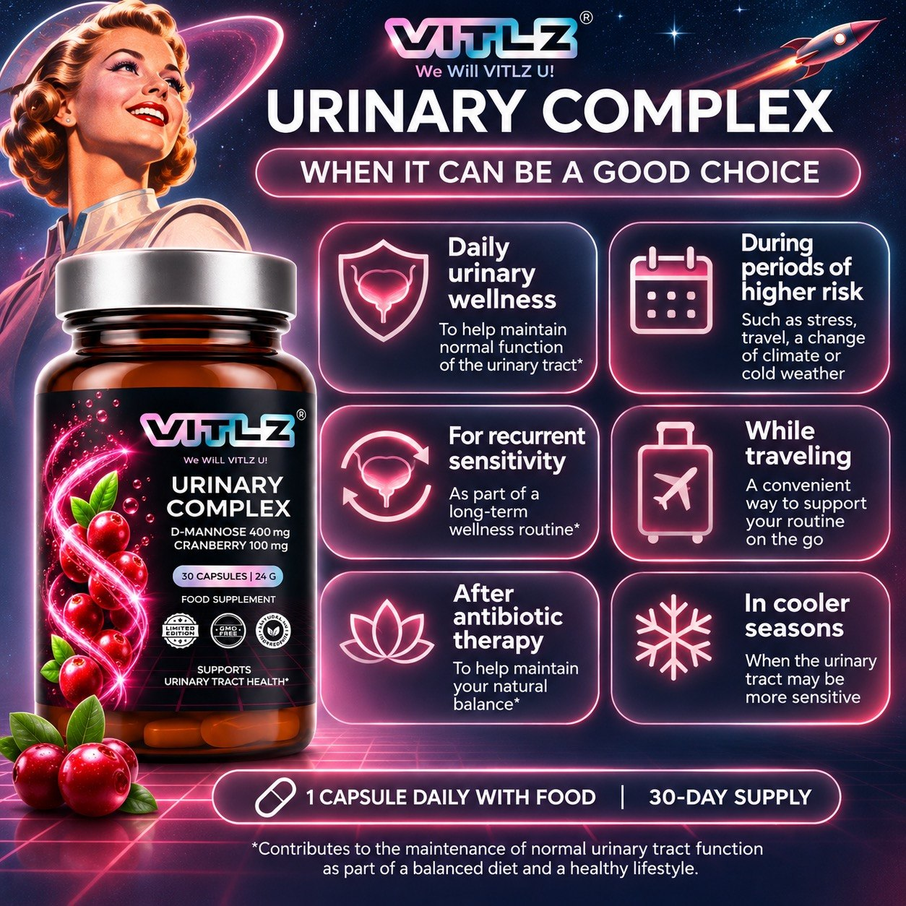

Cranberry & D-Mannose: Exploring Two Ingredients in Urinary Wellness
Discover the science behind cranberry extract and D-mannose, two ingredients commonly featured in urinary wellness supplements.
Urinary wellness is an important part of everyday well-being. Among the ingredients frequently discussed in this area, cranberry and D-mannose have attracted considerable scientific interest.
Both substances have been studied for their potential interactions with bacteria associated with urinary tract infections (UTIs), particularly Escherichia coli (E. coli). But how do these ingredients work, what does the research tell us, and why are they often combined?
1. D-Mannose: A Naturally Occurring Simple Sugar
D-mannose is a naturally occurring monosaccharide, structurally related to glucose. It is found in small amounts in fruits such as apples, peaches and cranberries. The human body also produces D-mannose naturally.
How Does D-Mannose Work?
Researchers have investigated D-mannose because of its potential interaction with certain strains of E. coli, a bacterium responsible for many urinary tract infections.
Some E. coli bacteria possess tiny hair-like structures called fimbriae, which help them attach to cells lining the urinary tract.
Laboratory research suggests that D-mannose can interact with specific bacterial adhesion structures, potentially interfering with their ability to attach to cells.
This proposed mechanism has generated interest in D-mannose as an ingredient in urinary wellness research.
What Does Clinical Research Show?
Although the biological mechanism is scientifically interesting, laboratory findings do not automatically translate into proven clinical benefits.
A large randomized clinical trial published in 2024 found that daily D-mannose supplementation did not significantly reduce recurrent urinary tract infections compared with placebo in women with a history of recurrent UTIs.
Further research is needed to determine whether particular formulations, dosages or populations may benefit.
D-mannose is not an antibiotic and should not be considered a replacement for medical treatment.
2. Cranberry: A Fruit Rich in Natural Plant Compounds
Cranberries (Vaccinium macrocarpon) have a long history of traditional use and have been extensively studied for their naturally occurring phytochemicals.
They contain various plant compounds, including polyphenols and proanthocyanidins (PACs).
Proanthocyanidins (PACs)
One of the most researched groups of cranberry compounds is A-type proanthocyanidins.
Laboratory studies suggest that certain cranberry compounds may interfere with the adhesion of some E. coli bacteria to urinary tract cells.
Researchers have investigated whether this mechanism could influence the occurrence of urinary tract infections.
What Does the Evidence Say?
A 2023 Cochrane systematic review found that cranberry products may reduce the risk of symptomatic, culture-verified urinary tract infections in certain populations, including women with recurrent UTIs.
However, results vary depending on the population, product formulation and study design.
Not all cranberry extracts are identical. Their composition and concentration of active plant compounds can differ significantly.
Importantly, cranberry products have not been established as a treatment for an active urinary tract infection.
3. Cranberry and D-Mannose: Why Are They Combined?
Cranberry and D-mannose are often included together in food supplements because both have been investigated in relation to bacterial adhesion.
Their proposed mechanisms involve different molecular interactions:
- D-Mannose: Studied for its interaction with specific bacterial adhesion structures.
- Cranberry: Contains plant compounds, including proanthocyanidins, investigated for their potential anti-adhesion properties.
This scientific interest has encouraged the development of combined formulations.
However, the idea that these ingredients work synergistically remains a hypothesis. High-quality clinical evidence demonstrating that the combination is more effective than either ingredient alone is currently insufficient.
4. Introducing VITLZ Urinary Complex
At VITLZ, we believe that thoughtful formulation begins with understanding the ingredients.
VITLZ Urinary Complex brings together D-mannose and cranberry fruit extract in a convenient daily food supplement.
What’s Inside Each Capsule?
| Ingredient | Amount |
|---|---|
| D-Mannose | 400 mg |
| Cranberry Fruit Extract (50:1) | 2 mg |
| Cranberry Fruit Equivalent | 100 mg |
The cranberry extract is derived from Vaccinium macrocarpon fruit.
The 50:1 extraction ratio means that 2 mg of extract corresponds to 100 mg of cranberry starting material. This ratio does not establish the extract’s proanthocyanidin content.
Designed for Everyday Convenience
- 30 capsules per bottle
- One capsule daily with food
- Convenient 30-day supply
- Manufactured in the European Union
- A combination of two carefully selected ingredients
VITLZ Urinary Complex — Thoughtfully Formulated for Your Daily Routine.
We Will VITLZ U!
5. A Balanced Approach to Urinary Wellness
Maintaining urinary wellness involves more than any single ingredient.
Adequate hydration, appropriate personal hygiene and attention to individual health needs are important parts of everyday care.
People who experience frequent urinary tract symptoms should consult a qualified healthcare professional to identify possible causes and discuss evidence-based prevention and treatment options.
Food supplements should complement a balanced diet and healthy lifestyle, not replace appropriate medical care.
Final Thoughts
Cranberry and D-mannose are two scientifically interesting ingredients with different characteristics and proposed biological mechanisms.
While cranberry products have demonstrated potential benefits in certain clinical settings, evidence supporting D-mannose supplementation remains limited and inconsistent.
Understanding the distinction between laboratory mechanisms and clinically demonstrated benefits helps consumers make informed choices.
At VITLZ, our approach is simple: carefully considered ingredients, transparent formulations and a commitment to responsible product communication.
Scientific References
- Hayward G. et al. (2024). D-Mannose for Prevention of Recurrent Urinary Tract Infection Among Women: A Randomized Clinical Trial. JAMA Internal Medicine.
- Williams G. et al. (2023). Cranberries for preventing urinary tract infections. Cochrane Database of Systematic Reviews.
Disclaimer: This article is provided for educational purposes only and does not constitute medical advice. VITLZ Urinary Complex is a food supplement, not a medicine, and is not intended to diagnose, treat, cure or prevent disease.